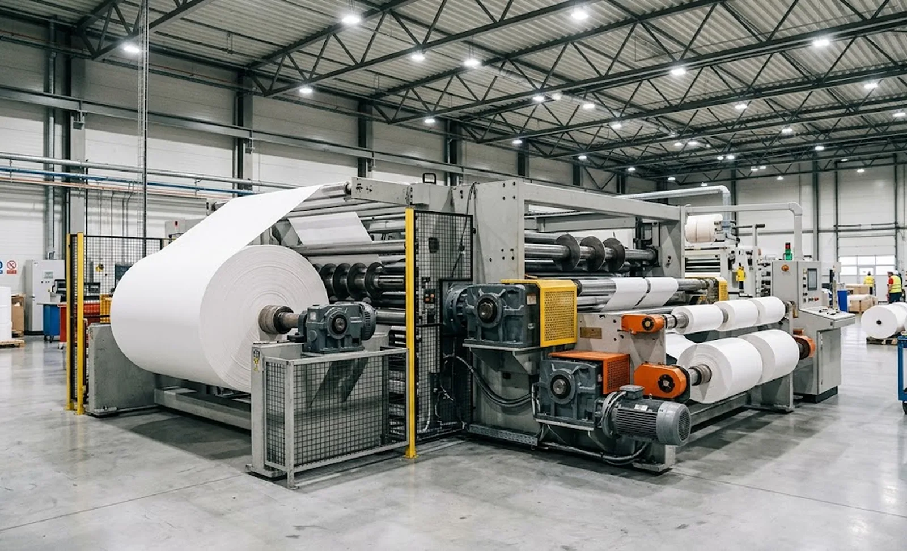
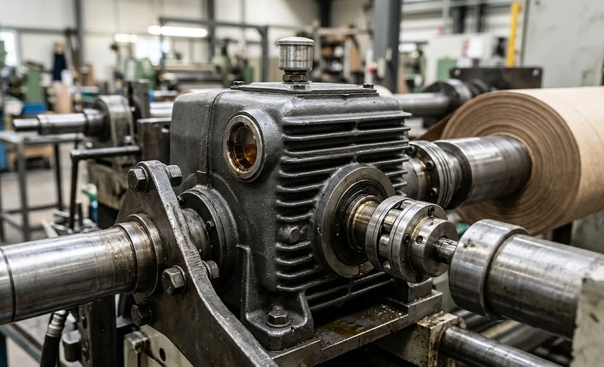

Published October 19, 2026 | By HDPTH Technical Editorial Team

Buyers compare slitter rewinders by width, speed and knife technology, yet the transmission between drive and shaft rarely enters the conversation until something fails. The gearbox choice shapes tension stability, noise, thermal behaviour, maintenance cost and the honest top speed of the line. This guide covers what to ask and what to demand in writing.
Why the transmission belongs in the specification
A slitter rewinder is a torque machine. The rewind must multiply motor torque as the roll grows, the unwind must hold back a heavy parent roll through every acceleration, and both must do so across shaft speeds that swing fourfold between core and full roll. A gearbox outside its thermal envelope derates on the afternoon shift; a belt that slips under peak load records every hard stop as micro-slip in the roll. These are specification failures, not commissioning accidents, and they also fix the maintenance profile for the machine’s whole life.
Transmission architectures: geared, belted and direct drive
Three architectures dominate. A helical gearbox is the default for rewind and unwind axes: it multiplies torque, lets a smaller motor run at efficient speed, and tolerates the overload of a hard stop with a full roll. Synchronous belts suit medium-torque axes — pull rolls, spreader rollers — where quiet running and low maintenance matter more than peak torque. Direct drives remove the gearbox entirely: no backlash and the cleanest torque control, at the price of a motor delivering full torque at low speed, exactly where its cooling is weakest. The error is applying one answer everywhere — direct drive on a heavy rewind axis means an oversized motor, while a plain belt on a dancer compensation axis injects slip into the most sensitive loop in the machine. Ask each bidder to justify the architecture axis by axis against your roll weights, speed range and cycle pattern.
Sizing the ratio: torque, speed and the roll cycle
The ratio is the most consequential number in the transmission. It must keep the motor inside its constant-power envelope across the entire roll cycle: at maximum diameter the rewind demands the highest torque at the lowest shaft speed, while at core the same tension arrives as low torque at maximum shaft speed. A ratio chosen to flatter catalogue numbers leaves the motor outside its envelope at one end — and tension control degrades exactly there. Require the stated ratio, motor speeds at core and full roll, peak torque demand and the thermal margin at your duty cycle.
| Transmission input | What to require from the supplier | Consequence if ignored |
|---|---|---|
| Gearbox ratio | Stated ratio with motor speed at core and full roll, inside the constant-power range | Tension droop at one end of every roll |
| Peak torque | Acceleration and stop cases with full roll inertia, checked against overload rating | Tooth damage and coupling wear after hard stops |
| Service factor | Applied multiplier, duty classification and thermal rating at your ambient | Gearbox runs hot, seals age early |
| Backlash | Rated figure per gearbox, preload measures on compensation axes, worn limits | Tension oscillation on trims and dancer recovery |
| Lubrication | Oil grade and volume per unit, first change interval, breather and seal types | Premature bearing failure after warranty ends |
Backlash, torsional stiffness and winding quality
Backlash is the lost motion between gear teeth when torque reverses. On a steady tension axis it is nearly invisible; on an axis that trims torque quickly — dancer recovery, splice compensation, lay-on pressure control — it becomes an oscillation source no control loop can fully cancel. Torsional stiffness behaves the same way: a soft belt or long shaft adds spring between command and effect. Ask for numbers, not adjectives — every gearbox has a rated backlash figure, and where a compensation duty exists the supplier should show the anti-backlash measure and the clearance values that count as worn. A supplier who cannot state a figure is not measuring it; you will measure it in roll quality.
Service factors, duty class and thermal rating
The service factor is where real machines live. It absorbs what the calculation smooths away: start-ups with a full roll, emergency stops, overhauling loads and the occasional jam. The right value differs by axis — a turret rewind cycling every roll deserves more margin than a trim fan — and a single blanket number usually means a standard text was copied. Thermal rating matters as much: a gearbox can pass the torque check and still overheat at high continuous speed. Require the thermal power rating at your ambient temperature and the cooling measure if any; gearboxes sized without thermal margin fade precisely when production pressure peaks.
Lubrication, mounting and maintainability
The cheapest failures are the ones scheduled away. Oil grade and fill volume per gearbox, the first oil change interval, breathers suited to a dusty converting hall, readable sight glasses and drainage access without dismantling guards are all quotation-stage decisions — as is mounting, because a gearbox no technician can reach will be maintained on hope. Wear limits belong in the documentation, not folklore: vibration checkpoints with acceptance values, any oil-analysis programme, and the clearance thresholds that define an overhaul. This turns the gearbox into a managed asset with an objective trigger before a tooth failure stops the line.
What to write into the specification
- Per-axis architecture with the engineering reason: gearbox, belt or direct drive.
- Ratios with motor speed at core and full roll, inside the constant-power range.
- Applied service factor, duty class and thermal rating at your ambient temperature.
- Rated backlash per gearbox, anti-backlash measures on compensation axes, worn limits.
- Lubrication schedule plus vibration checkpoints, overhaul triggers and spares.

A transmission cannot be evaluated in isolation from the drive behind it, so read this guide together with our motor and drive selection guide, and see how the same torque logic extends across our high-speed slitting machines.
Specifying a new machine or retrofit?
Send HDPTH your material range, widths, speeds, roll diameters and duty cycle. We will document the transmission per axis — ratios, service factors, backlash and lubrication terms included — in the offer itself.
Submit Your Project InquiryQuestions to put to every vendor
- Which axes are geared, belted or direct drive, and what duty justifies each?
- What ratio, service factor and thermal rating were applied, at what ambient?
- What backlash figure applies, and what protects compensation duties?
- What lubrication schedule, wear limits and vibration values ship with the documentation?
Line speed claims and transmission capability are two views of the same engineering — our guide to the line speed specification shows how gearing limits what a machine can honestly promise.
Planning the rest of the handover?
Ask HDPTH for the transmission documentation behind any configuration — ratios, lubrication plans and acceptance values arrive with the machine, not after the first failure.
Contact HDPTHFrequently asked questions
Should a slitter rewinder use a gearbox, belts or a direct drive?
The duty decides. A helical gearbox is the default for rewind and unwind axes because it multiplies torque, lets a smaller motor run efficiently and tolerates overload. Synchronous belts suit medium-torque axes such as pull rolls, where quiet running and low maintenance matter. Direct drives remove backlash and give the cleanest torque control, but the motor must deliver full torque at low speed, where cooling is worst. Ask each supplier to justify the architecture per axis.
How should a buyer evaluate the gearbox ratio on a quote?
Check the ratio against both ends of the roll cycle. At maximum roll diameter the rewind needs the highest torque at the lowest shaft speed; at core, the same tension arrives at maximum shaft speed. The ratio must keep the motor inside its constant-power envelope across that range, with thermal margin. Require the stated ratio, motor speeds at core and full roll, peak torque and the service factor used.
How much backlash is acceptable in a slitter rewinder transmission?
Backlash matters most where torque changes direction quickly: dancer compensation, rapid tension trims and nip or knife actuation. On steady tension axes a quality helical gearbox is normally acceptable; on compensation duties it becomes tension oscillation that no control loop can fully cancel. Ask for the rated backlash figure of each gearbox, the anti-backlash measure where it matters, and the clearance values that count as worn.
What service factor should be specified for gearbox selection?
The service factor is the multiplier between applied torque and gearbox rating, absorbing start-ups, overhauling rolls, hard stops and uneven web loads. A heavy rewind axis with frequent cycles deserves a higher factor than a trim fan. Ask each supplier to state the applied service factor, its duty classification and the thermal rating at your ambient temperature.
What gearbox maintenance terms belong in the purchase contract?
Specify oil grade and fill volume per gearbox, the first oil change interval, scheduled sight-glass or sampling checks, vibration checkpoints with acceptance values, and the wear limits that define overhaul. Ask for spare seals, breathers and coupling elements in the commissioning spares package, and for ratios and torque limits recorded in the documentation. Lubrication and monitoring must be written down, not verbal.
Sources
- ISO 6336 series: calculation of load capacity of spur and helical gears
- AGMA technical standards for gear rating and industrial gearing
- IEC 60204-1: safety of machinery — electrical equipment of machines
- SEW-EURODRIVE: industrial gear unit selection and service factor documentation
- US DOE Advanced Manufacturing Office: motor and drive system efficiency resources